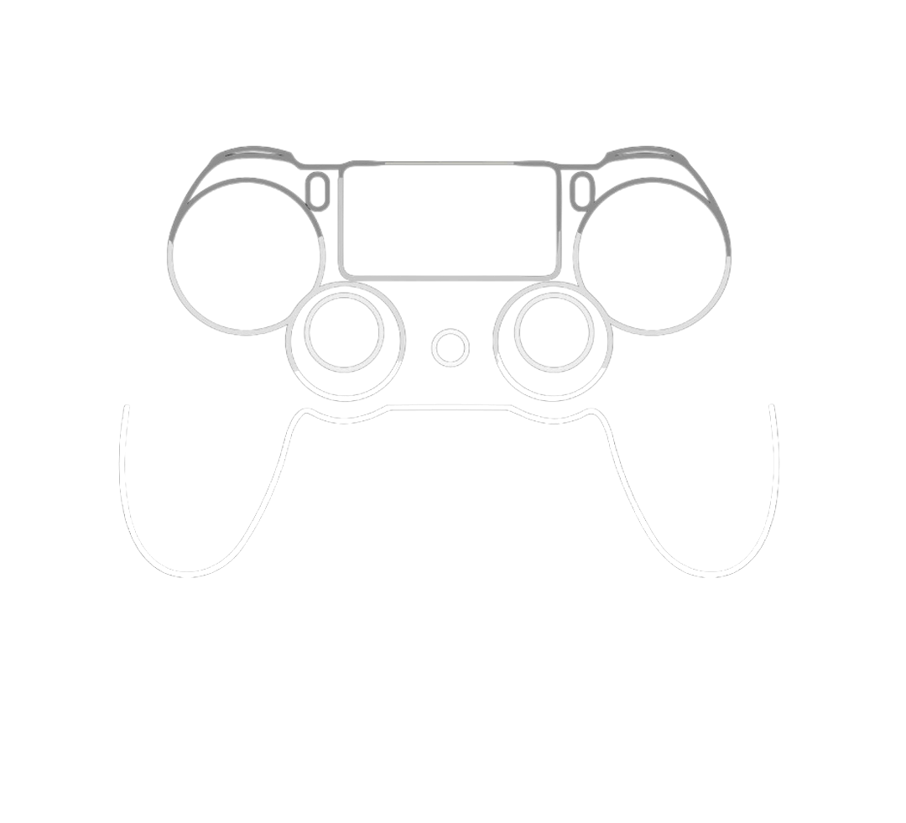

Bem vindo ao GameTrackr
O site feito de gamers para gamers.
Se cadastre aqui

Clicando em confirmar você aceita nossos termos de uso de cookies e politica de privacidade, caso contrário o site poderá não funcionar como esperado.
O que é o GameTrackr?
É um serviço de matchmaking para jogadores do mundo todo utilizando a IA para encontrar seu melhor parceiro ou oponente. O GameTrackr utiliza algoritmos avançados de inteligência artificial para analisar perfis de jogadores, preferências de jogo e níveis de habilidade. Ao considerar vários fatores, o sistema faz combinações inteligentes com outros jogadores que compartilham interesses e habilidades semelhantes.
O gameTrackr é um site criado por gamers para gamers, e é o serviço definitivo para encontrar jogadores de todo o mundo. Se você está procurando o parceiro de jogo perfeito ou um oponente desafiador, o sistema alimentado por inteligência artificial irá ajudá-lo a encontrar a combinação ideal.